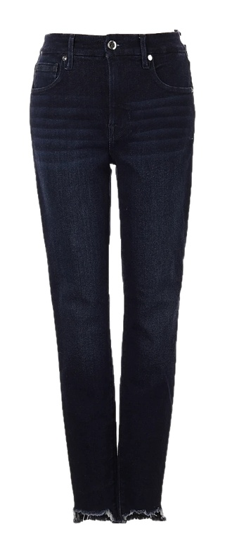

Jeans + navy lace cami + brown trench



Faceless mannequin · Try-On Max34s · 3 cr ≈ $0.22

17.6s · 1 cr

10.2s · 1 cr

13.3s · 1 cr

10.4s · 1 cr
Headless mannequin · Try-On Max41s · 3 cr ≈ $0.22

15.3s · 1 cr

14.2s · 1 cr

13.8s · 1 cr

13.5s · 1 cr